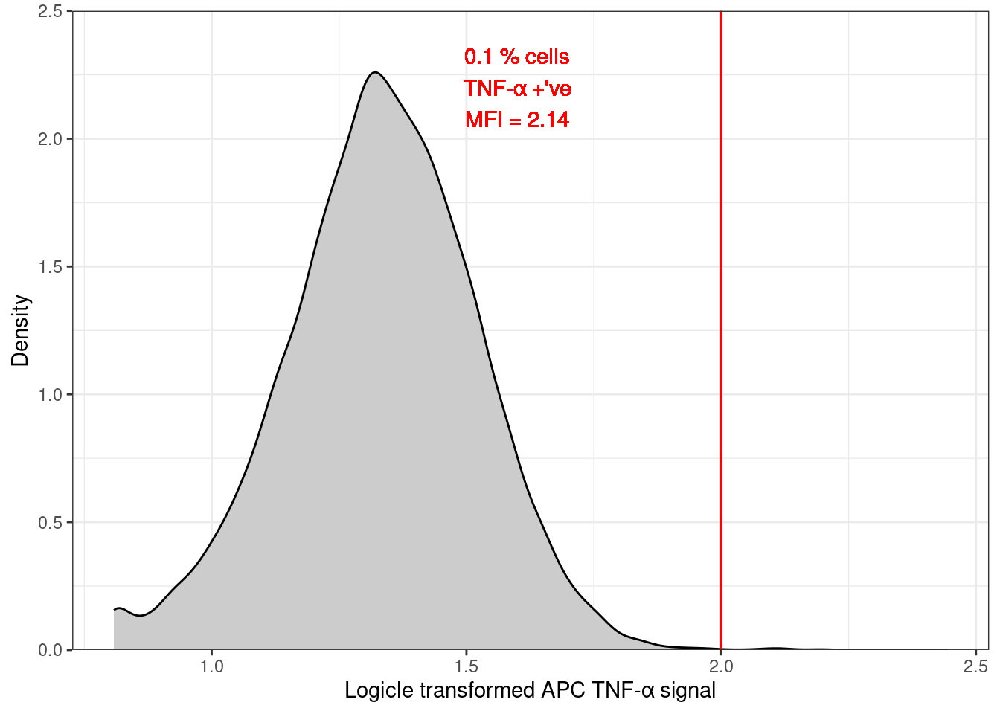
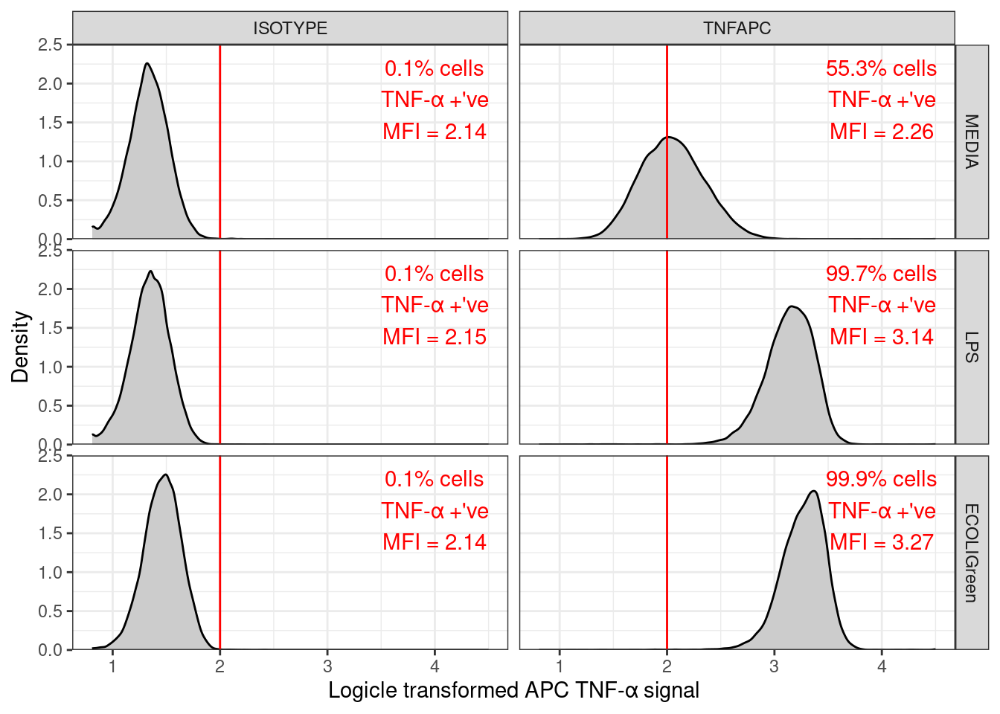
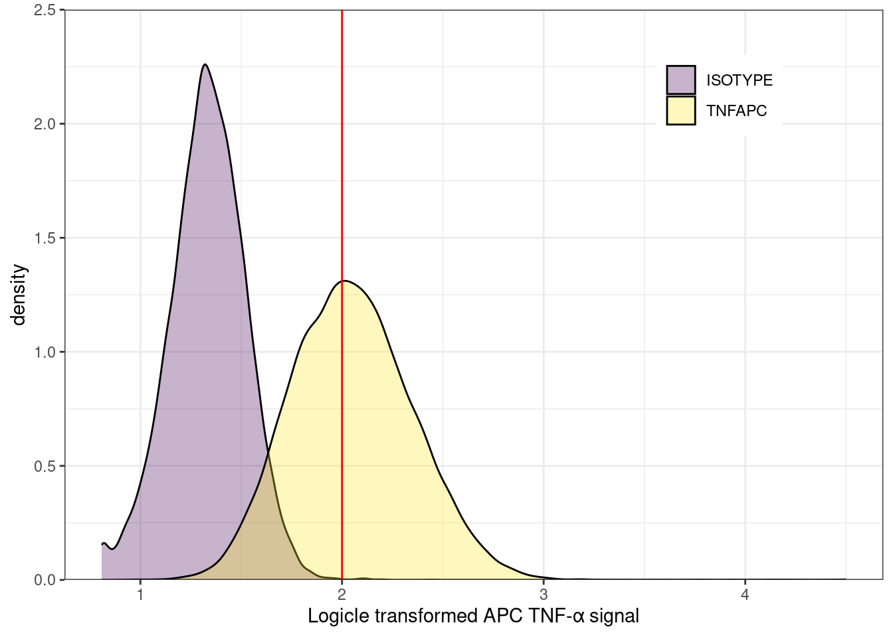
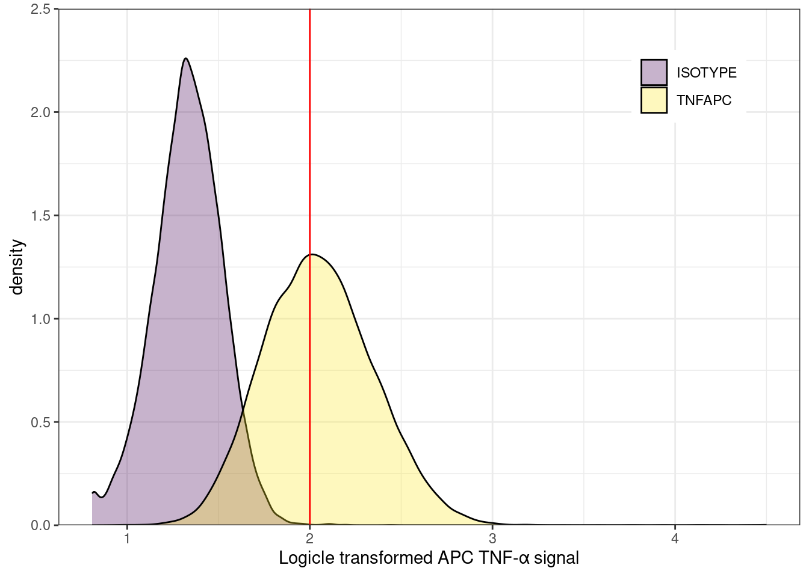

Workshop
Data Analysis 4: Immunobiology - Your data presentation
In this workshop learn how to create density plots to visualise the distribution and gating of the signals and calculate the the percentage of cells in each quadrant of a quadrant gated plot of TNFa_APC_Lin signal against the E_coli_FITC_Lin signal. You will also grow your knowledge of ggplot annotation and data import from googlesheet.
Exercises
Add your data
Enter these in the BIO00066I Biomedical Sciences class data
The columns you must add are:
apc_mfi: Mean fluorescence intensity of the logicle transformed TNFa_APC_Lin in the TNF-α positive cellsperc_tfna_pos: % non debris cells that are TNF-α positive cells
The other columns are calculations you make along the way and may help you get to the apc_mfi and perc_tfna_pos values.
The column names are the same as those used in the Data Analysis 2: Immunobiology - Sample data analysis workshop.
Set up
🎬 Open the RStudio project you created in the Data Analysis 2: Immunobiology - Sample data analysis workshop.
🎬 Create a new script called data-presentation.R
🎬 Load packages:
🎬 Save a copy of live_labelled.csv to your data-processed folder. These cells have been AI cleaned, gated to remove debris and dead cells, and labelled as positive or negative for the E_coli_FITC_Lin and TNFa_APC_Lin signals1.
🎬 Import the data:
clean_trans_nondebris <- read_csv("data-processed/live_labelled.csv")🎬 I’m also going to select only columns I need to keep my life simple:
clean_trans_nondebris <- clean_trans_nondebris |>
select(FS_Lin,
SS_Lin,
E_coli_FITC_Lin,
TNFa_APC_Lin,
antibody,
treatment,
tnfa,
fitc)These are the forward and side scatter, the two logicle-transformed signals the groups (treatment and antibody) and whether the cell is positive or negative for each of the signals.
🎬 Click on the data frame in the environment window to view it and make sure you have an understanding of the data.
| FS_Lin | SS_Lin | E_coli_FITC_Lin | TNFa_APC_Lin | antibody | treatment | tnfa | fitc |
|---|---|---|---|---|---|---|---|
| 27304 | 21432 | 2.573944 | 1.797574 | ISOTYPE | ECOLIGreen | TNF-α -'ve | FITC +'ve |
| 16437 | 18261 | 3.303969 | 1.553092 | ISOTYPE | ECOLIGreen | TNF-α -'ve | FITC +'ve |
| 23356 | 20257 | 3.024955 | 1.432302 | ISOTYPE | ECOLIGreen | TNF-α -'ve | FITC +'ve |
| 20567 | 19949 | 1.665994 | 1.602869 | ISOTYPE | ECOLIGreen | TNF-α -'ve | FITC -'ve |
| 31556 | 24441 | 3.363674 | 1.674940 | ISOTYPE | ECOLIGreen | TNF-α -'ve | FITC +'ve |
| 25858 | 18398 | 1.592289 | 1.469350 | ISOTYPE | ECOLIGreen | TNF-α -'ve | FITC -'ve |
| 25512 | 11655 | 1.592289 | 1.535148 | ISOTYPE | ECOLIGreen | TNF-α -'ve | FITC -'ve |
| 26949 | 18936 | 3.629136 | 1.762831 | ISOTYPE | ECOLIGreen | TNF-α -'ve | FITC +'ve |
| 22715 | 24400 | 3.345617 | 1.810729 | ISOTYPE | ECOLIGreen | TNF-α -'ve | FITC +'ve |
| 29398 | 21824 | 3.687067 | 1.688024 | ISOTYPE | ECOLIGreen | TNF-α -'ve | FITC +'ve |
🎬 Use fct_relevel() to put treatment groups in order so that our graphs are better to interpret.
clean_trans_nondebris <- clean_trans_nondebris |>
mutate(treatment = fct_relevel(treatment, c("MEDIA",
"LPS",
"ECOLIGreen")))We need to calculate some summary information such as the percent of TNF-α positive cells in each sample and the mean fluorescence intensity of the TNFa_APC_Lin signal in the TNF-α positive cells. If you especially hate R but are familiar with pivot tables in Excel, then you could use that….. but it would not be as reproducible as using R and tidyverse functions.
🎬 Calculate the number of cells in each sample:
🎬 Click on the dataframe in the environment window to view it and make sure you have an understanding of the summary.
| antibody | treatment | n_nondebris |
|---|---|---|
| ISOTYPE | MEDIA | 13106 |
| ISOTYPE | LPS | 45138 |
| ISOTYPE | ECOLIGreen | 26866 |
| TNFAPC | MEDIA | 24419 |
| TNFAPC | LPS | 25479 |
| TNFAPC | ECOLIGreen | 26002 |
🎬 Calculate the number of TNF-α positive cells in each sample and the mean fluorescence intensity of the TNFa_APC_Lin signal in the TNF-α positive cells:
🎬 Click on the dataframe in the environment window to view it and make sure you have an understanding of the summary.
| antibody | treatment | n_pos_tnfa | mean_apc |
|---|---|---|---|
| ISOTYPE | MEDIA | 11 | 2.14 |
| ISOTYPE | LPS | 24 | 2.15 |
| ISOTYPE | ECOLIGreen | 23 | 2.14 |
| TNFAPC | MEDIA | 13503 | 2.26 |
| TNFAPC | LPS | 25414 | 3.14 |
| TNFAPC | ECOLIGreen | 25965 | 3.27 |
Note: If your dataframe has 0 rows first check you have written “TNF-α +’ve” correctly in the filter function (other no rows will match). If you have written it correctly, and you are working on your own machine, you may have different character encoding. The simplest solution: is to repeat the step in workshop 2
is to repeat the step in workshop 2 “Add a label, tnfa, to the data to indicate if the cell is positive or negative for TNF-α” by using TNF-a rather than TNF-α in the labelling
make sure you resave the data (“data-processed/live_labelled.csv”) after that step
make sure you edit the code in this workshop to reflect the change in the label
In order to calculate the percentage of cells that are TNF-α positive, we need to join the two summaries together and add a column using mutate().
🎬 Join the summary of the total number of cells in each sample with the summary of the number of TNF-α positive cells in each sample and calculate the percentage of cells that are TNF-α positive:
## join the summary with the summary of the number of cells in each sample
## and calculate the percentage of cells that are TNF-α +'ve
clean_trans_nondebris_tfna_pos <-
clean_trans_nondebris_tfna_pos |>
left_join(clean_trans_nondebris_n, by = c("antibody", "treatment")) |>
mutate(perc_tfna_pos = round(n_pos_tnfa/n_nondebris * 100, 1) )🎬 Click on the dataframe in the environment window to view it and make sure you have an understanding of the summary.
| antibody | treatment | n_pos_tnfa | mean_apc | n_nondebris | perc_tfna_pos |
|---|---|---|---|---|---|
| ISOTYPE | MEDIA | 11 | 2.14 | 13106 | 0.1 |
| ISOTYPE | LPS | 24 | 2.15 | 45138 | 0.1 |
| ISOTYPE | ECOLIGreen | 23 | 2.14 | 26866 | 0.1 |
| TNFAPC | MEDIA | 13503 | 2.26 | 24419 | 55.3 |
| TNFAPC | LPS | 25414 | 3.14 | 25479 | 99.7 |
| TNFAPC | ECOLIGreen | 25965 | 3.27 | 26002 | 99.9 |
You can use the same process calculate the percentage of cells that are FITC positive in each sample and the mean fluorescence intensity of the FITC signal in the FITC positive cells.
Distribution of APC TNF-α signal with gate
To annotate the distribution of APC TNF-α signal with the gate used to define whether the cells are positive or negative for TNF-α it is useful to assign that value to a variable that we can use in our plots. We will do the FITC gate value at the same time2.
🎬 Assign the gate values to variables:
apc_cut <- 2
fitc_cut <- 2Plot one sample
The pipe (|>) allows us to filter the data before plotting it which allows select the sample we want to plot.
🎬 Plot the distribution of the APC TNF-α signal for the MEDIA treatment and the ISOTYPE antibody:
clean_trans_nondebris |>
filter(treatment == "MEDIA",
antibody == "ISOTYPE") |>
ggplot(aes(x = TNFa_APC_Lin)) +
geom_density(fill = "gray80") +
geom_vline(xintercept = apc_cut,
color = "red") +
scale_y_continuous(expand = c(0, 0),
limits = c(0, 2.5),
name = "Density") +
scale_x_continuous(name = "Logicle transformed APC TNF-α signal") +
theme_bw()
geom_vline()adds a vertical line to the plot at the value ofapc_cutwhich is the gate value we determined for the APC TNF-α signal.geom_density()is a smoothed version of a histogram and shows the distribution of the data. The fill argument sets the colour of the plot to a light grey.the expand argument in a
scale_x_....orscale_y_....sets the axis line at zero rather than being below it.
Plot annotation
You have (at least) three options for adding the summary statistics to the plot.
-
Most simple: adding in word/googledocs (or whatever you write your report in).
Save the plot using
ggsave(), insert as an image into your report and a text box. In R by hard coding the values in the
geom_text()function.
clean_trans_nondebris |>
filter(treatment == "MEDIA",
antibody == "ISOTYPE") |>
ggplot(aes(x = TNFa_APC_Lin)) +
geom_density(fill = "gray80") +
geom_vline(xintercept = apc_cut,
color = "red") +
geom_text(label = "0.1 % cells\nTNF-α +'ve\nMFI = 2.14",
x = 1.6,
y = 2.2,
colour = "red") +
scale_y_continuous(expand = c(0, 0),
limits = c(0, 2.5),
name = "Density") +
scale_x_continuous(name = "Logicle transformed APC TNF-α signal") +
theme_bw()
- In R and fully reproducibly by using the
clean_trans_nondebris_tfna_posdataframe with the summary statistics ingeom_text(). That dataframe also needs filtering to the sample you are plotting.
clean_trans_nondebris |>
filter(treatment == "MEDIA",
antibody == "ISOTYPE") |>
ggplot(aes(x = TNFa_APC_Lin)) +
geom_density(fill = "gray80") +
geom_vline(xintercept = apc_cut,
color = "red") +
geom_text(data = clean_trans_nondebris_tfna_pos |>
filter(treatment == "MEDIA",
antibody == "ISOTYPE"),
aes(label = paste0(perc_tfna_pos,
"% cells\nTNF-α +'ve\nMFI = ",
mean_apc)),
x = 1.7,
y = 2.1,
colour = "red") +
scale_y_continuous(expand = c(0, 0),
limits = c(0, 2.5),
name = "Density") +
scale_x_continuous(name = "Logicle transformed APC TNF-α signal") +
theme_bw()
This has several advantages:
if the data changes, the plot annotation will update automatically just as the distribution will.
extending to multiple facets requires little extra work.
Write to file
🎬 Assign the plot to apc_distibution_media_isotype
apc_distibution_media_isotype <- clean_trans_nondebris |>
filter(treatment == "MEDIA",
antibody == "ISOTYPE") |>
ggplot(aes(x = TNFa_APC_Lin)) +
geom_density(fill = "gray80") +
geom_vline(xintercept = apc_cut,
color = "red") +
geom_text(data = clean_trans_nondebris_tfna_pos |>
filter(treatment == "MEDIA",
antibody == "ISOTYPE"),
aes(label = paste0(perc_tfna_pos,
"% cells\nTNF-α +'ve\nMFI = ",
mean_apc)),
x = 1.7,
y = 2.1,
colour = "red") +
scale_y_continuous(expand = c(0, 0),
limits = c(0, 2.5),
name = "Density") +
scale_x_continuous(name = "Logicle transformed APC TNF-α signal") +
theme_bw()🎬 Save the plot to a file:
ggsave("figures/apc_distibution_media_isotype.png",
device = "png",
plot = apc_distibution_media_isotype,
width = 4,
height = 2.5,
units = "in",
dpi = 300)Multiple facets
To plot all the samples in one go we can use facet_grid(). treatment ~ antibody puts the treatments in rows and the antibodies in columns. Of course, we now don’t need to filter the data to a single sample.
🎬 Plot the distribution of the APC TNF-α signal for all samples:
clean_trans_nondebris |>
ggplot(aes(x = TNFa_APC_Lin)) +
geom_density(fill = "gray80") +
geom_vline(xintercept = apc_cut,
color = "red") +
geom_text(data = clean_trans_nondebris_tfna_pos,
aes(label = paste0(perc_tfna_pos,
"% cells\nTNF-α +'ve\nMFI = ",
mean_apc)),
x = 4,
y = 1.8,
colour = "red") +
scale_y_continuous(expand = c(0, 0),
limits = c(0, 2.5),
name = "Density") +
scale_x_continuous(name = "Logicle transformed APC TNF-α signal") +
facet_grid(treatment ~ antibody) +
theme_bw()
Note that adding plot annotations manually (method 1) and using R fully reproducibly (method 3) are possible on faceted plots but method 2 is not because you need the annotations to change with values in treatment and antibody.
You can combine filtering data and faceted plots to do facet plots of a subset of the samples.
Overlay instead of facets
Using facets is one way to show multiple samples in one plot. Another way is to overlay the plots by mapping the fill aesthetic to the antibody variable. Making the fill semi-transparent with alpha = 0.3 allows you to see the overlap of the distributions.
🎬 Overlay the distribution of the APC TNF-α signals for the media treated samples:
clean_trans_nondebris |>
filter(treatment == "MEDIA") |>
ggplot(aes(x = TNFa_APC_Lin, fill = antibody)) +
geom_density(alpha = 0.3) +
geom_vline(xintercept = apc_cut,
color = "red") +
scale_y_continuous(expand = c(0, 0),
limits = c(0, 2.5)) +
scale_x_continuous(name = "Logicle transformed APC TNF-α signal") +
theme_bw() 
To change the colours we need to used a scale_fill_... function. These functions can also be used to change the name (name = ...) of the legend and the names (labels = c(...)) of each group. scale_fill_manual() allows to specify the colours (values = c(...)) manually.
Instead of picking colours, I like to use the viridis scales. The viridis scales provide colour maps that are perceptually uniform in both colour and black-and-white. They are also designed to be perceived by viewers with common forms of colour blindness. See Introduction to viridis for more information.
Here I use scale_fill_viridis_d(). The d stands for discrete. The function scale_fill_viridis_c() would be used for continuous data. I’ve used the default “viridis” (or “D”) option (do ?scale_fill_viridis_d for all the options) and got rid of the “antibody” name. I also moved the legend.
clean_trans_nondebris |>
filter(treatment == "MEDIA") |>
ggplot(aes(x = TNFa_APC_Lin, fill = antibody)) +
geom_density(alpha = 0.3) +
geom_vline(xintercept = apc_cut,
color = "red") +
scale_fill_viridis_d(name = NULL) +
scale_y_continuous(expand = c(0, 0),
limits = c(0, 2.5)) +
scale_x_continuous(name = "Logicle transformed APC TNF-α signal") +
theme_bw() +
theme(legend.position = c(0.85, 0.85))
Percentage of cells in each quadrant
We want to calculate the the percentage of cells in each quadrant of a quadrant gated plot of TNFa_APC_Lin signal against the E_coli_FITC_Lin signal.
🎬 Calculate the number of cells in each quadrant for each sample:
🎬 Click on the data frame in the environment window to view it and make sure you have an understanding of the data.
| antibody | treatment | tnfa | fitc | n |
|---|---|---|---|---|
| ISOTYPE | MEDIA | TNF-α +'ve | FITC -'ve | 11 |
| ISOTYPE | MEDIA | TNF-α -'ve | FITC +'ve | 4 |
| ISOTYPE | MEDIA | TNF-α -'ve | FITC -'ve | 13091 |
| ISOTYPE | LPS | TNF-α +'ve | FITC +'ve | 1 |
| ISOTYPE | LPS | TNF-α +'ve | FITC -'ve | 23 |
| ISOTYPE | LPS | TNF-α -'ve | FITC +'ve | 5 |
| ISOTYPE | LPS | TNF-α -'ve | FITC -'ve | 45109 |
| ISOTYPE | ECOLIGreen | TNF-α +'ve | FITC +'ve | 18 |
| ISOTYPE | ECOLIGreen | TNF-α +'ve | FITC -'ve | 5 |
| ISOTYPE | ECOLIGreen | TNF-α -'ve | FITC +'ve | 15457 |
| ISOTYPE | ECOLIGreen | TNF-α -'ve | FITC -'ve | 11386 |
| TNFAPC | MEDIA | TNF-α +'ve | FITC +'ve | 20 |
| TNFAPC | MEDIA | TNF-α +'ve | FITC -'ve | 13483 |
| TNFAPC | MEDIA | TNF-α -'ve | FITC +'ve | 2 |
| TNFAPC | MEDIA | TNF-α -'ve | FITC -'ve | 10914 |
| TNFAPC | LPS | TNF-α +'ve | FITC +'ve | 13 |
| TNFAPC | LPS | TNF-α +'ve | FITC -'ve | 25401 |
| TNFAPC | LPS | TNF-α -'ve | FITC +'ve | 1 |
| TNFAPC | LPS | TNF-α -'ve | FITC -'ve | 64 |
| TNFAPC | ECOLIGreen | TNF-α +'ve | FITC +'ve | 14969 |
| TNFAPC | ECOLIGreen | TNF-α +'ve | FITC -'ve | 10996 |
| TNFAPC | ECOLIGreen | TNF-α -'ve | FITC +'ve | 29 |
| TNFAPC | ECOLIGreen | TNF-α -'ve | FITC -'ve | 8 |
As there are four quadrants and six samples, you would expect 24 rows in the data frame. However, there are only 23 rows. This is because there are no cells in the quadrant where both cells are positive for both TNF-α and FITC for the ISOTYOPE antibody and MEDIA treated samples. Since we are probably happy not to annotate a figure with 0 %, this is fine.
To calculate the percentage of cells in each quadrant, we need to join this dataframe with the number of non-debris cells for each sample, i.e., clean_trans_nondebris_n
🎬 Calculate the percentage of cells in each quadrant for each sample:
I have additionally filtered out rows where the % cells rounds to 0. This is again because we are probably happy not to annotate a figure with 0 %.
🎬 Click on the data frame in the environment window to view it and make sure you have an understanding of the data.
| antibody | treatment | tnfa | fitc | n | n_nondebris | perc |
|---|---|---|---|---|---|---|
| ISOTYPE | MEDIA | TNF-α +'ve | FITC -'ve | 11 | 13106 | 0.1 |
| ISOTYPE | MEDIA | TNF-α -'ve | FITC -'ve | 13091 | 13106 | 99.9 |
| ISOTYPE | LPS | TNF-α +'ve | FITC -'ve | 23 | 45138 | 0.1 |
| ISOTYPE | LPS | TNF-α -'ve | FITC -'ve | 45109 | 45138 | 99.9 |
| ISOTYPE | ECOLIGreen | TNF-α +'ve | FITC +'ve | 18 | 26866 | 0.1 |
| ISOTYPE | ECOLIGreen | TNF-α -'ve | FITC +'ve | 15457 | 26866 | 57.5 |
| ISOTYPE | ECOLIGreen | TNF-α -'ve | FITC -'ve | 11386 | 26866 | 42.4 |
| TNFAPC | MEDIA | TNF-α +'ve | FITC +'ve | 20 | 24419 | 0.1 |
| TNFAPC | MEDIA | TNF-α +'ve | FITC -'ve | 13483 | 24419 | 55.2 |
| TNFAPC | MEDIA | TNF-α -'ve | FITC -'ve | 10914 | 24419 | 44.7 |
| TNFAPC | LPS | TNF-α +'ve | FITC +'ve | 13 | 25479 | 0.1 |
| TNFAPC | LPS | TNF-α +'ve | FITC -'ve | 25401 | 25479 | 99.7 |
| TNFAPC | LPS | TNF-α -'ve | FITC -'ve | 64 | 25479 | 0.3 |
| TNFAPC | ECOLIGreen | TNF-α +'ve | FITC +'ve | 14969 | 26002 | 57.6 |
| TNFAPC | ECOLIGreen | TNF-α +'ve | FITC -'ve | 10996 | 26002 | 42.3 |
| TNFAPC | ECOLIGreen | TNF-α -'ve | FITC +'ve | 29 | 26002 | 0.1 |
You can combine the concept of annotation and faceted plots to annotate a quadrant gated plot of TNFa_APC_Lin signal against the E_coli_FITC_Lin signal you made in the Data Analysis 2: Immunobiology - Sample data analysis workshop.
Importing from google sheets
The BIO00066I Biomedical Sciences class data are in a google sheet. You can download the file as an excel file or .csv. file but it is also possible to import the data directly from the google sheet into R. Use whatever you prefer. An advantage of using the google sheet is you won’t have to remember to download the data when someone updates it.
You can use the googlesheets4 package (Bryan 2023) to do this.
file <- "https://docs.google.com/spreadsheets/d/104EXdgsiIq-FuRF9Ly9zewEVdpkVWbyOwxSAmiqJepg/edit#gid=0"class_data <- read_sheet(file)You will be asked:
Is it OK to cache OAuth access credentials in the folder
C:/Users/emmar/AppData/Local/gargle/gargle/Cache between R sessions?
1: Yes
2: No
Selection: Type the number for yes.
You will be prompted to authenticate with Google in a browser window.
I suggest clicking the box for:
See, edit, create, and delete all your Google Sheets spreadsheets. Learn more
but you do not have to. Click allow/continue.
You will see a message in the browser window:
Authentication complete. Please close this page and return to R.
You should see that the class data has been imported into R.
Note that you will probably want to do some quality control such has filtering out rows with missing data in some columns. We did this in the Data Analysis 1: Core workshop.
Analysis of the class data
You should be able to apply techniques you have learned in stage 1 to the class data. You can find those materials on the VLE in the 17C/8C module sites. However, you may find it useful to use the latest version of those material which are available outside the VLE at without 2FA.
Stage 1
Data Analysis in R for Becoming a Bioscientist 1 (Rand 2023a). Core concepts about scientific computing, types of variable, the role of variables in analysis and how to use RStudio to organise analysis and import, summarise and plot data.
Data Analysis in R for Becoming a Bioscientist 2 (Rand 2023a). The logic of hypothesis testing, confidence intervals, what is meant by a statistical model, two-sample tests and one- and two-way analysis of variance (ANOVA).
Supporting book Computational Analysis for Bioscientists (Rand 2023b)
Independent study following the workshop
The Code file
This contains all the code needed in the workshop even where it is not visible on the webpage.
The workshop.qmd file is the file I use to compile the practical. Qmd stands for Quarto markdown. It allows code and ordinary text to be interweaved to produce well-formatted reports including webpages. View the Qmd in Browser. Coding and thinking answers are marked with #---CODING ANSWER--- and #---THINKING ANSWER---
Pages made with R (R Core Team 2023), Quarto (Allaire et al. 2022), knitr (Xie 2022), kableExtra (Zhu 2021)
References
Footnotes
Data Analysis 2: Immunobiology - Sample data analysis workshop has been amended to include the instruction to save these data at the end.↩︎
You might want to look back at Quality control 3: Gating to determine a ‘real’ signal in the week 2 workshop to remind yourself of how we determined the gate values for the sample data.↩︎